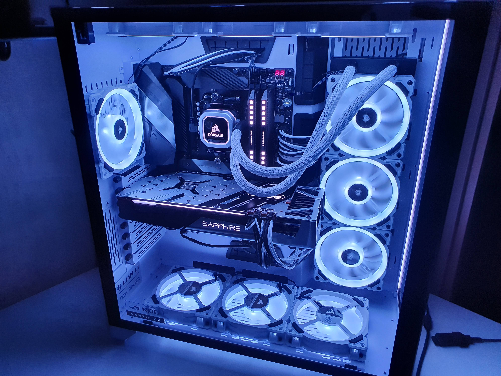
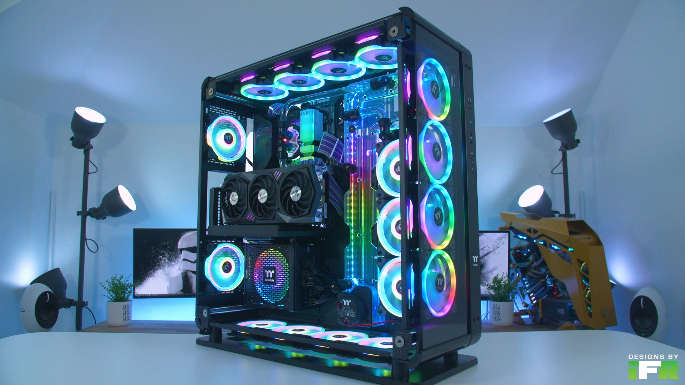

The case contains all off the components of the computer. While it doesn't normally give extra power to the computer, it is used to easily hold or transport a computer as a whole. Cases are used to easily turn off and on a computer, and are usually able to hold extra storage drives. They keep the computer in one place, and also help with cooling. They provide the computer with steady airflow when paired with fans, and can have a steady intake and exhaust to suffiently cool hotter pieces of equipment.
